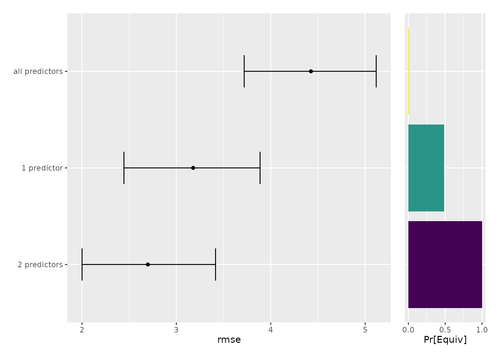

compare_to_leader() can relabel models for plotting through its key
argument. initialize_keys() builds a template for that argument with one
row per model, ready to have its label column edited.
Arguments
- x
An object produced by
perf_mod().
Value
A tibble with one row per model and two columns: model, holding
the model names recorded in x, and label, initialized to the same
values.
Details
Leave the model column alone. Those names are what
compare_to_leader() joins on, and every model in x has to be
represented, so editing or dropping them will produce an error. Edit the
label column to whatever should appear on the plot.
Rows may be reordered and extra columns may be added; both are ignored. Labels do not have to be unique.
Examples
library(parsnip)
library(rsample)
library(workflowsets)
set.seed(1)
folds <- vfold_cv(mtcars, v = 5)
# \donttest{
mpg_models <-
workflow_set(
preproc = list(
small = mpg ~ wt,
medium = mpg ~ wt + hp,
large = mpg ~ .
),
models = list(lm = linear_reg())
) |>
workflow_map("fit_resamples", resamples = folds, seed = 2)
set.seed(4321)
mpg_post <- perf_mod(mpg_models, metric = "rmse", refresh = 0, chains = 2)
mpg_keys <- initialize_keys(mpg_post)
mpg_keys
#> # A tibble: 3 × 2
#> model label
#> <chr> <chr>
#> 1 small_lm small_lm
#> 2 medium_lm medium_lm
#> 3 large_lm large_lm
# Edit the labels, then pass the result along:
mpg_keys$label <- c("1 predictor", "2 predictors", "all predictors")
mpg_post |>
compare_to_leader(size = 0.5, key = mpg_keys, seed = 2) |>
autoplot()

# }